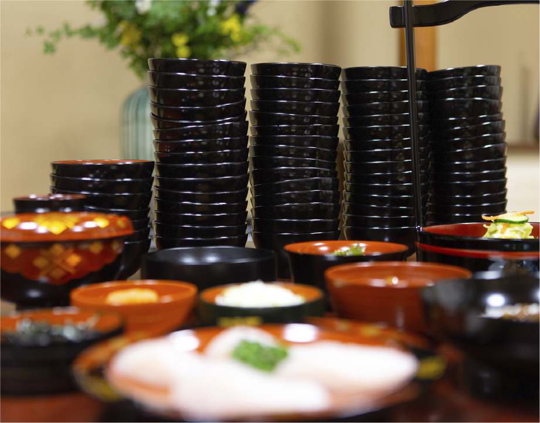

盛岡三大麺の一つであるわんこそばは、
南部地方に伝わる「そば振る舞い」が原型といわれ、「じゃーんじゃん」「それ、どんどん」の掛け声とともに、給仕さんがお椀に一口分のそばを投げ入れます。
お椀が空になると次々とそばが投げ入れられ、その掛け合いも楽しみの一つとなっています。おなかがいっぱいになったら、すかさずフタをしないと、またそばが投げ入れられてしまいます。
そばの分量は、わんこそば10～15杯が、かけそば約一杯分に当たります。